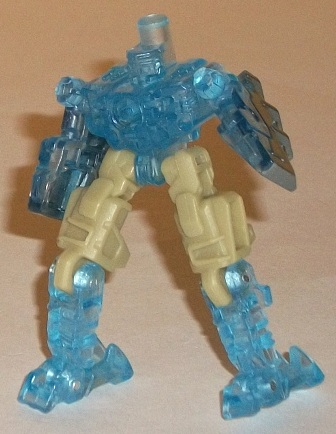
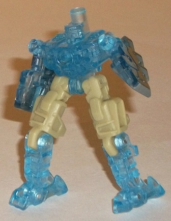
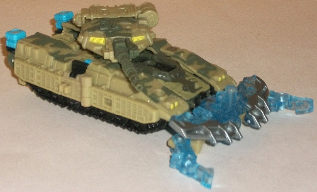
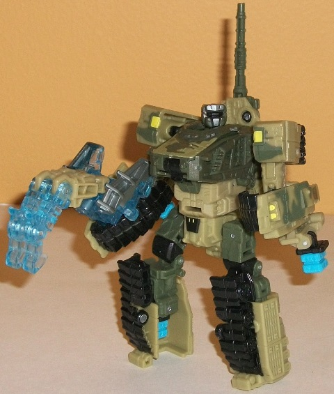
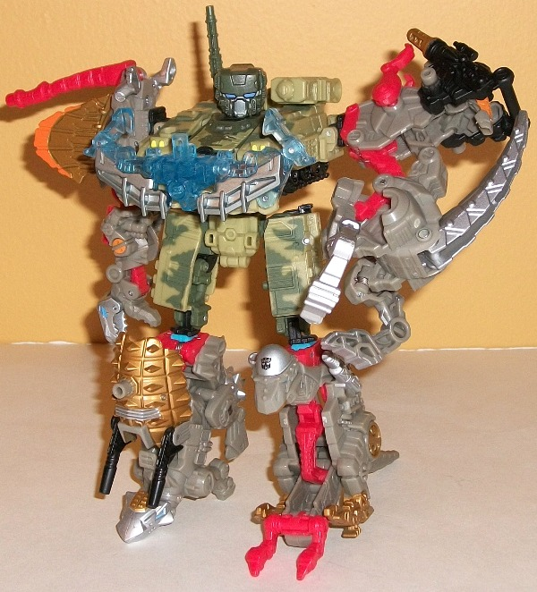

Groundspike
Groundspike

Allegiance: Minicon
Size : Mini-Con
Difficulty of Transformation : Very Easy
Color Scheme : Transparent light blue, pale dull greenish tan, and some silver
Individual Rating : 5.0
Heavytread
w/ Groundspike
Groundspike

Allegiance:
Minicon
Size
: Mini-Con
Difficulty of Transformation
: Very
Easy
Color Scheme
: Transparent light
blue, pale dull greenish tan, and some silver
Individual Rating
: 5.0
Groundspike's robot mode
is a bit odd-looking, as his proportions are bit wonky. His legs come up
quite high and his chest is quite short, making it almost look like he
hitched up his pants too high or something like that. His arms proportionally
are alright, but no real hands are molded into them-- they're basically
just halves of his shovel-blade. His head is a bit dopey-looking as well,
being round yet quite flat (and with another peg sticking up behind it).
What makes it even harder to see as a head is that there's no paint apps
on it (Groundspike's only paint apps are on his shovel-blade bits)-- thus
with the transparent plastic, it's hard to even make out the details. The
mold detailing on the rest of the figure is serviceable, though not quite
as detailed as most of the other PCC Minicons. His color scheme isn't so
hot either-- the transparent light blue is okay enough for a Minicon, but
the dull pale greenish tan doesn't really go with it all that well (though
it doesn't outright clash, either). The silver paint apps go okay with
the blue, but there's not enough of them to really contribute much to Groundspike's
overall color scheme in this mode. What Groundspike does do better than
most Minicons in this mode is his articulation-- he can move at the shoulders,
hips, knees, and ankles-- the latter of which is quite rare for toys this
small, and helps him keep his balance well enough. As for ports, Groundspike
has two Minicon ports, one on his back and one in the middle of his chest.
Groundspike's vehicle
weapon mode is a spikey front bumper, and actually looks quite good attached
to Heavytread. The shovel-blades look quite formidable, and Groundspike's
feet tips help to make it look a little more like a claw (though silver
paint apps on his feet would've helped this a bit more). I do wish his
legs pegged in somewhere in this mode, though, as they just kinda flop
around a little.
As for Groundspike's
robot weapon mode... I can only guess as to what it is. It's basically
his robot mode bending over backwards. Is it some sort of limp-looking
claw weapon? A slasher weapon? Whatever it is, it's horrible, and easily
his worst mode.
Groundspike's chest
armor mode is surprisingly good, and one of the best-- if not THE best--
of the PCC Minicons in this mode. It actually looks like legitimate armor,
with the silver blades forming nice accentuations on the chest and the
spike-legs framing the whole thing quite nicely. Again, I wish his legs
pegged in somewhere to help the whole thing feel more solid, but otherwise
this mode is pretty nice-looking.
Groundspike is one of
the few PCC Minicons who actually (generally) has better alt modes than
his robot mode (which is pretty oddly-proportioned). His vehicle weapon
and chest armor modes are pretty good, his robot mode and color scheme
are merely okay, and his robot weapon mode is a total disappointment. All
in all, about a middle-of-the-road PCC Minicon when every mode is taken
into account.
 Heavytread
Heavytread



Allegiance
: Autobot
Difficulty of Vehicle/Robot Transformation
:
Easy
Difficulty of Torso Transformation
:
Medium
Color Scheme
: Dull dark military
green, black, pale dull greenish tan, and some light sky blue, bright yellow,
periwinkle, and silver
Individual Rating
: 9.4
In vehicle mode, Heavytread
is a tank. This mode already looks good, but for a Power Core Combiner
it looks EXTRA good. Really the only complaints I have here are that the
combiner ports on the back end stick out rather obviously. (The other two
combiner ports near the middle of the figure also stick out a bit solely
based on their color, but otherwise tuck in below the turret quite nicely.)
Except for the aforementioned sky blue combiner ports, Heavytread's color
scheme is quite fitting for a military vehicle too, with tan and a dark
green military camo being the main colors, and black being used mostly
for the treads. All contrast quite well eith each other, and the camo paint
job is surprisingly detailed, given a lot of camo paint jobs on toys this
size tend to be rather simplistic. The mold detailing is also VERY well-done
on this toy, with things like the turret, the treads, and armor plating
all completely detailed, with even little "rivets" here and there. Proportionally
Heavytread's turret is a tad on the short side, but otherwise it all looks
quite good. (And speaking of the turret, it can rotate 360 degrees around,
though unfortunately the barrel can't point up.) Heavytread also has a
flip-out Powerlinx port at the front of this mode for attaching Minicons.
Heavytread's transformation
to his "normal" robot mode is pretty straightforward, with the front of
the tank becoming his chest, the sides his arms, and the back end his feet
while the turret hangs behind his back. Far from being a "vehicle extra",
I think the turret helps complement the look of this mode, and it's easy
to see Heavytread bending over to fire it at someone. Heavytread has a
few minor proportion/kibble problems in this mode, which I think is overall
the worst of his three modes (though it's still good overall). His lower
arms are the biggest offenders-- there's quite a bit of shell kibble around
his hands (which are molded into the larger pieces), and two of his combiner
ports hang rather unceremoniously off the sides of said lower arms. His
upper arms also look too small in comparison, and a bit puny when compared
to Heavytread's otherwise boxy, bulky proportions. His head is also a bit
small, particularly in comparison to his long, fairly large chest. (The
actual head sculpt is well-done, though-- his visor and faceplate are quite
clear, unlike the murky bunch of detailing a lot of other Power Core Combiner's
faces have.) His legs are pretty well-done and fairly straightforward,
so no complaints there. Heavytread's articulation is quite good in this
mode, as well-- he can move at he neck, shoulders (at three points), elbows
(at two points), waist, hips (at two points), and knees (at two points).
His turret can also still rotate around in this mode as well. His boxy
lower arms can restrict movement there a little bit, but other than that
he's surprisingly posable for the chunk-bot that he generally is.
Heavytread's torso mode
is-- surprisingly-- the best mode that he has. Transformation-wise, it's
about halfway between the robot and vehicle modes, but with a few extra
bits pulled out, like his combiner ports and combined mode. His proportions
are great-- with his considerably larger combiner head (which his normal
head actually forms the back of), his chest now looks roughly in proportion
to it. He's got a skinny "muscular-looking" lower stomach, which dovetails
nicely into his waist and upper legs, which-- although made from his normal
robot mode's legs-- aren't really obviously so. (Part of this is accomplished
by having his toes on the backside of his upper legs so they're not in
full view.) He still has the Powerlinx port on the front of his chest for
Minicons, and everything stays (or clips) into place quite securely in
this mode. I also LOVE how the tank turret splits into two different shoulder-mounted
guns in this mode-- a nice touch, there. As for articulation, Heavytread
is a bit more articulated than most PCCs in torso mode-- he can move at
the neck, shoulders (at two points), hips (at three points), knees (at
two points), waist, and his left shoulder-mounted gun can move up and down.
Having a waist on a PCC torso mode is a real boon, and makes for some really
great poses. Really, the only complaint I have with this mode-- and it's
a very minor one-- is that little sections of his treads fold down behind
his upper legs, giving them a bit of an oddly "kneeling" look when looked
at from the side.
Heavytread is the best
Power Core Combiner figure of the entire line. Every single one of his
modes ranges from pretty good to downright awesome, and the couple of pieces
of kibble in his normal robot mode are really the only drawbacks that aren't
completely minor. My personal favorite of the Power Core Combiner 2-pack
toys, though you'll also need a group of drone limbs from another PCC toy
to enjoy his torso mode gimmick-- highly recommended.
Reviews by Beastbot